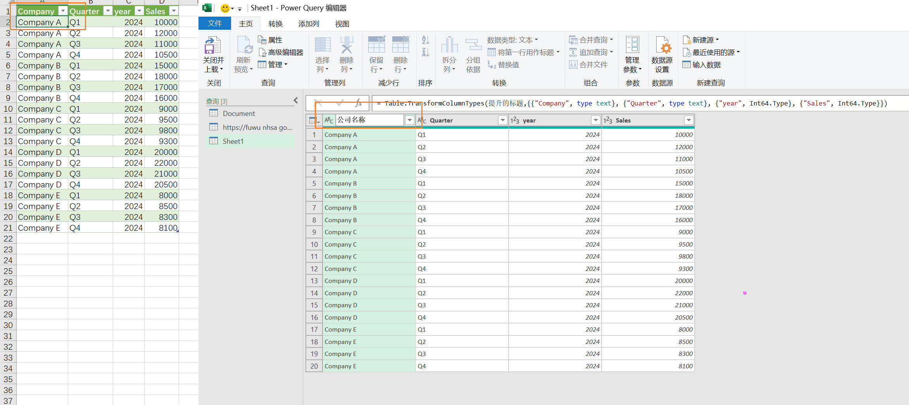
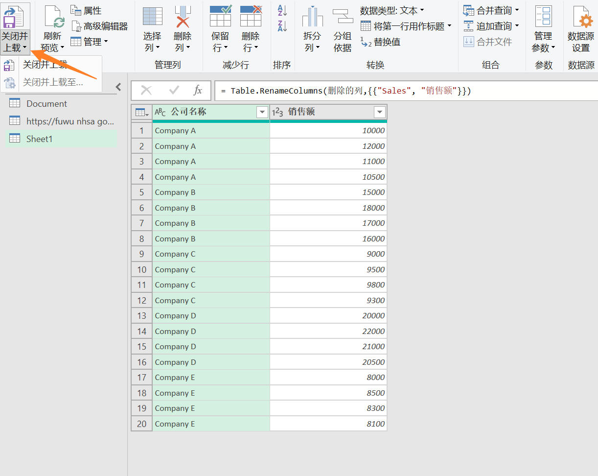

Excel基础与进阶
引言
人的需求 >> 软件功能
数据场景
- 记录整理
- 数据计算
- 数据分析
- 数据展示
数据处理的挑战
- 数据太多
- 计算太累
- 需要价值和意义
- 需要协作
Excel应用场景
- 低量级的数据存储
- 一次性的数据处理与分析
- 复杂且无法优化的报表
怎么学习Excel
- 从实际需求出发，直接去解决实际问题
- 一开始学习不要追求大而全，但要有系统认知思维，逐步扩充认知体系
认识Excel
Excel版本


打开Excel


设置菜单栏与功能区
熟悉：菜单栏、功能区、功能区分组
可以自定义快速访问工具栏
可以自定义功能区，放自己常用的功能组
折叠功能区快捷键：Ctrl + F1
可以自定义背景和主题
自定义新建工作表时的字体、sheet页数量等
- 文件 - 选项 - 常规
保存
保存：Ctrl + S
另存为：F12
保存格式默认为xlsx，如果要兼容低版本（97 - 2003），则保存为xls
设置密码，包括设置打开密码和修改密码，如果是后者，修改后只能另存为
格式类型：常见的就是xlsx和xls，其他格式自行拓展。
| 格式 | 扩展名 | 说明 |
|---|---|---|
| Excel工作簿 | .xlsx |
|
| Excel启用宏的工作簿 | .xlsm |
|
| Excel二进制工作簿 | .xlsb |
|
| 模板 | xltx |
|
| 模板（代码） | .xltm |
|
| Excel 97 - Excel 2003工作簿 | .xls |
|
| Excel 97 - Excel 2003模板 | .xlt |
|
| Microsoft Excel 5.0 / 95 工作簿 | .xls |
|
| XML电子表格 2003 | .xml |
|
| XML 数据 | .xml |
数据录入规范
横向录入，保证每一条数据都是完整的
快捷键
Tab，光标选中后一个单元格Shift + Tab，光标选中前一个单元格Enter，光标选中下一个单元格Shift + Enter，光标选中上一个单元格Tab + Enter，回到下一行的首列Alt + Enter，单元格内换行Alt + ↓：生成下拉列表，从已输入的数据中进行选择
特殊格式
录入时间
分隔符，用
-或者/来分隔，才能被正确的识别为日期格式可以在开始菜单栏的数字格式中，调整日期的显示格式，如将默认的短日期（
/分隔）调整为长日期（年月日的形式）快捷键：输入当前日期：
Ctrl + ;，输入当前时间：Ctrl + Shift + ;可以先输入日期，敲一个空格，再输入时间。也可以直接输入=NOW()函数录入百分比
先设置单元格格式，然后输入
可以调整小数点后的数字
录入分数
有两种形式，一个是小数点，如0.2，一个是分数，如
1/5，第二种直接输入，会被认为是日期，需要输入个0加空格，再输入，就会被识别为分数也可以先设置单元格格式，再录入
录入长数据
Excel数据录入的数据精度，只有15位；超过的位数编辑栏中会显示为0，显示栏会以科学计数法显示，输入
123456789012345678，实际显示如下：
类似身份证过长数据的录入，不能在数据格式下进行录入，而是要调整为文本格式

文本型数字的单元格左上角，会有一个绿色的小三角，代表着这是一个文本型数字
缺点：无法计算
有点：可以完整的记录长数字
小技巧：如果先输入了数字，但忘记调整单元格格式为文本了，可以在数字开始，输入英文下的的单引号，也可以转换成文本格式。
原位填充：输入数据后，按回车，光标会跳转到下一行的单元格，可以使用
Ctrl + Enter，使得光标停留在原来的单元格。另外一个应用场景是，选中多个单元格后，输入，再Ctrl + Enter，可以全部填充
数据验证
数据 - 数据工具 - 数据验证
保证数据录入更加规范
设置提示
可以对输入值做一些格式上的限定

设置序列（列表）
可以在指定的几个值里，进行选择
下拉列表也可以设置外部来源表

设置出错警告
比如身份证是18位，当输入的长度错误时，可以弹窗提示
可以设置不同的告警程度
圈释无效数据
设置数据验证之后，再点击数据 - 数据工具 - 数据验证 - 圈释无效数据，不符合的数据就会被圈出来
备注：粘贴时可以选择粘贴数据验证

特殊符号
换行符及空格：alt + 1 + 0
小技巧
插入多行：选中整行，鼠标悬浮左下角出现十字后，按住Shift下拉，拉多少格就是多少行。如果不按Shift，就是快速填充。
互换两列：类似插入多行的操作。选中一列，鼠标悬浮右边线出现十字后，按住Shfit进行拖动。
同时修改多个工作表：使用Shfit选中多个工作表，在某一个表中的一个位置，进行修改，其他表对应的位置，也会做出相同的修改。
未保存文件如何恢复：设置Excel中的自动保存时间，去设置的目录里（或者使用云存档，本质是一样的）。
同时关闭多个文件：按住Shfit，再关闭。
给批注添加图片：右键批注，新建批注格式，选择颜色与线条，填充时选择图片填充
解决文本数字不能求和：选中文本数字区域后，在选择框的右上角，选择转换为数字（直接修改数字格式，不会生效）
工作簿和工作表
新建工作簿：Ctrl + N
新建工作表：Ctrl + F1，直接点击新建即可
工作表切换：Ctrl + Tab
- 或者在
视图 - 窗口 - 切换窗口，直接进行切换 视图 - 窗口 - 并排查看，可以同时查看多个工作簿（多加显示器就好）视图 - 窗口 - 新建窗口，可以同时查看多个工作表（新出现了一个影子工作簿）
可以在不同工作簿中移动工作表
单元格
单元格内容
在单元格内填充的内容，可以分为以下三种基本数据类型
文本：默认左对齐，文本不可参与计算
数值：默认右对齐，数值计算精度为15位
逻辑值：默认居中对齐，
True和False既能用来判断，也能参与计算
直接全选 - 删除，是不会清除掉单元格内容的格式的，需要点击开始 - 编辑 - 清除格式选项卡
单元格格式
引言：为什么同一内容，显示的会不一样？
单元格常规格式
开始 - 字体，开始 - 对齐方式 - 右下角的对话框启动器
可以鼠标右键 - 设置单元格格式
快捷键：
Ctrl + 1控制外在效果

对齐
- 使用
跨列居中替换掉合并居中，因为合并居中无法进行透视和筛选 - 可以设置自动换行
- 使用
字体
边框
- 要先设置好边框效果，再设置到边框
填充
人们常混淆的边框和网格线。网格线只是辅助查看的一个功能，打印是不显示的；可以在页面布局 - 工作表选项中关闭
如何清除单元格格式：开始 - 编辑 - 清除 - 清除格式
单元格数字格式
控制展示方式
不管单元格怎么显示，看编辑栏里的内容，就是最原始的内容

常规格式
- 键入数字时Excel所应用的默认数字格式。多数情况下，设置为“常规”格式的数字，即以键入的方式显示
- 然而，如果单元格的宽度不够显示整个数字，则“常规”格式将对带有小数点的数字进行四舍五入
- “常规”数字格式还对较大的数字（12位或更多）使用科学计数法（指数）表示
- 换句话说，Excel可能不会对按你的预期对这些数字进行格式设置，如果需要更准确的数字格式，需要自己调整
- 样例：123
数值
- 用于数字的一般表示
- 可以指定要使用的小数位数，是否使用千位分隔符以及如何显示负数
货币
- 用于一般货币值，并显示带有数字的默认货币符号
- 可以指定要使用的小数位数，是否使用千位分隔符，以及如何显示负数
会计专用
- 也用于货币值，但是它会在一列中，对齐货币符号和数字的小数点
日期格式
根据指定的类型和区域设置（国家/地区），将日期和时间序列号，显示为日期值
以星号
*开头的日期格式，受在控制面板中指定的区域日期和时间设置更改的影响不带星号的日期格式，不受
控制面板设置的影响Excel可将日期存储为序列号，以便可以在计算中使用它们。默认情况下，1900年1月1日为序列号1
时间格式
- 根据指定的类型和区域设置（国家/地区），将日期和时间序列号，显示为时间值
- 以星号
*开头的日期格式，受在控制面板中指定的区域日期和时间设置更改的影响 - 不带星号的日期格式，不受
控制面板设置的影响
百分比
- 将单元格值乘以100，并将结果与百分号（%）一同显示。您可以指定要使用的小数位数
分数
- 根据所指定的分数类型，以分数形式显示数字
- 输入0，加空格，再输入1/2，则会显示为分数
- 也可以直接输入小数后，设置为分数格式
科学记数
- 以指数记数法显示数字，将其中一部分数字用E+n代替，其中，E代表指数，指将前面的数字乘以10的n次幂
- 例如：2位小数的“科学记数”格式将12345678901显示为1.23E+10，即用1.23乘以10的10次幂
- 可以指定要使用的小数位数
文本
- 将单元格内的内容视为文本，并在键入时准确显示内容，即使键入数字也是如此
- 左上角会出现绿色的小三角，这个叫
错误指示器。一般将数字设置成文本，Excel会认为，你设置的有问题，因为它本来应该是个数字 - 可以输入英文状态下的单引号，再输入数字，则变为了文本格式
特殊
- 将数字显示为邮政编码、电话号码或社会保险号码
自定义数字格式
- 以现有格式为基础，生成的自定义数字格式
- 使你能够修改现有数字格式代码的副本
- 使用此格式可以创建添加到数字格式代码列表中的已定义数字格式

拓展：
在单元格中显示####，则单元格可能高度不够，无法显示数据。双击单元格列名的右边界（可以选中多列），可以快速自动重调列宽以适合数字。也可以在开始 - 格式 - 自动调整列宽进行设置。
自定义格式
若要创建自定义数字格式，首先应从选择某一内置数字格式开始。
然后，可以更改该格式的任意代码部分，从而创建自己的自定义数字格式
每一种数字格式，本质都是由模式代码控制的
数值占位符
三个常见的数值占位符：0、#、？

文本占位符
文本占位符：@
可以用英文引号""中加入文本，在文本前后增加数值，对文本进行自定义格式
- 可以让文本重复多次显示：
@@@，输入多个 - 拼接字符串：
@"同学"，注意用双引号包裹

四个区域
0;-0;0;@
利用数字格式四个区域的定义（正数；负数；零值；文本），可以对各区域内容独立定义
自定义数字格式中，无需包含所有代码部分。如果仅为自定义数字格式指定了两个代码部分，则第一部分用于正数和零，第二部分用于负数。
如果仅指定一个代码部分，则该部分将用于所有数字。
如果要跳过某一代码部分，然后在其后面包含一个代码部分，则必须为要跳过的部分包含结束分号
样例：
1 | 正0;负0;零;@ |
颜色
中文版的Excel，可以使用颜色代码编写自定义格式，使其显示不同的颜色
颜色代码必须在代码部分中的第一个项目
颜色的两边必须加上英文方括号
可供选择的颜色代码有：[黑色] [白色] [红色] [绿色] [蓝色] [黄色] [洋红色]（一共56种内置颜色）
条件运算
< = >
在实际应用中，只能在前两个区域中使用> < = 等条件代码
第三个区域以除此之外作为条件值
[条件1];[条件2];[其他]
[条件];[其他]
样例：
1 | [绿色][>=80]0;[红色][<60]0;0 |

时间
通过改变代码的数量和顺序，改变日期的显示方式

样例：

自定义格式案例
- 将
部门一列的文本后，添加部门二字，如肉类部门@"部""门"
- 将标题中的两个日期，在不改变数值的情况下，只显示月份，不显示年和日，如
11月m"月"
- 将
11月、12月、营收增长三列的数值，设置为货币专用显示，显示0位小数 - 将
营收增长一列中正增长的数值，标记为红色向上箭头，如 ，负增长的数值标记为绿色向下箭头，如
，负增长的数值标记为绿色向下箭头，如 ，隐藏零值
，隐藏零值[绿色]"↑"￥0;[红色]"↓"￥-0;;@
| 部门 | 类别 | 2019/11/1 | 2019/12/1 | 营收增长 |
|---|---|---|---|---|
| 肉类 | 猪肉 | 6489 | 6243 | -246 |
| 烘焙 | 面包 | 7132 | 7398 | 266 |
| 农产品 | 苹果 | 8621 | 8517 | -104 |
| 熟食 | 火腿 | 5798 | 5765 | -33 |
| 肉类 | 鸡肉 | 9347 | 9276 | -71 |
| 烘焙 | 蛋糕 | 7665 | 7889 | 224 |
| 农产品 | 玉米 | 5372 | 5372 | 0 |
| 熟食 | 培根 | 8196 | 8923 | 727 |
显示结果：

单元格选择技巧
配合Shfit连选，配合Ctrl点选
选中任意一个单元格，双击上边框，跳转至整表的最上方；双击下边框，跳转至整表的最下方。类似Ctrl + 箭头，同样中间不能有空单元格
上面两个可以配合使用
Excel打印
文件 - 打印
- 区域打印
- 设置 - 打印选定区域
- 列数过多（不能太多）
- 方法一：调整页边距
- 方法二：使用缩放 - 将页调整为一列
- 居中打印
- 页面设置 - 页边距
- 行号打印
- 页面设置 - 工作表
- 标题打印
- 背景：第二页往后，标题栏默认是不显示的
- 页面布局 - 页面设置 - 打印标题（Office 2019+）
- 页面设置 - 工作表
快捷键
新建工作簿：Ctrl + N
新建工作表：Ctrl + F1，直接点击新建即可
工作表切换：Ctrl + Tab
- 或者在
视图 - 窗口 - 切换窗口，直接进行切换 视图 - 窗口 - 并排查看，可以同时查看多个工作簿（多加显示器就好）视图 - 窗口 - 新建窗口，可以同时查看多个工作表（新出现了一个影子工作簿）
折叠功能区：Ctrl + F1
保存：Ctrl + S
另存为：F12
输入当前日期：Ctrl + ;
输入当前时间：Ctrl + Shift + ;
光标选中后一个单元格：Tab
光标选中前一个单元格：Shift + Tab
光标选中下一个单元格：Enter
光标选中上一个单元格：Shift + Enter
回到下一行的首列：Tab + Enter
单元格内换行：Alt + Enter
生成下拉列表，从已输入的数据中进行选择：Alt + ↓
原位填充：Ctrl + Enter
快速填充：Ctrl + E
普通区域创建表（Power Query），Ctrl + T
快速分析：Ctrl + Q
新建批注：Shift + F2
筛选：Ctrl + Shift + L
快速移动单元格：Ctrl + 方向键
快速框选单元格：Ctrl + Shfit + 方向键
快速新增行列：Ctrl + Shfit + 加号
快速删除行列：Ctrl + 减号
进入编辑状态，以修改值、校验公式区域、重命名：F2
数据收集
注意，是收集，不是采集。
场景是让各部门或者各团队，填写某些固定模板的数据内容
本地
只能本地Excel传递的话，一般来说会先做好Excel表头，再填写一条记录作为模板，让填写人参考
优化项：
- 增加输入提示，
数据 - 数据验证或者是数据 - 有效性 - 设置数据验证出错警告，如身份证号会少填写，可以设置警告
- 下拉列表，当存在有限的可选值时，可以使用下拉列表，而不是手动输入；也是在
数据菜单栏
数据合并
数据 - 新建查询 - 从文件 -从文件夹
版本：Office 2016 +
收到了不同人员或者部门填写的数据后，我们会收到10多个甚至几十个文件，可以使用数据查询，将统一模板的内容，导入到新表中（而不是一个个复制粘贴）
注意：如果存在文件加密，则导入不了
如果能用协作工具，最好用
协作工具
如果可以连通外网，可以使用多人协作工具：如飞书等
共享文档内容
文档加密
限制编辑
数据验证
协作办公
收集网络数据
类似爬虫，只能做简单需求的表格类数据，非结构化数据无法处理，Ajax请求的数据无法获取
数据 - 获取数据 - 自网站
Office 2016，名称为新建查询
Office 2019，名称为获取数据
- 从url中获取单页数据：https://movie.douban.com/coming
- 实时获取数据：https://q.10jqka.com.cn/
- 设置自动更新
- 设置打开文件时更新数据
- 如果想对收集的数据，进行二次修改，请跳转
数据清洗小节
注意：Excel内置的是IE浏览器，现在很多网站都获取不了
数据处理
包含数据录入、预处理、后处理、数据清洗
查找
开始 - 编辑 - 查找与选择
常规查找
可以指定某一列单独查找
可以查找全部
可以查找整个工作簿（多个工作表）
可以查找公式、值、注释和批注
可以查找格式，可以直接选择单元格格式，不用一个一个自己
- 快捷键：
Ctrl + F - 找出客户ID为
ANTON的单元格数据 - 找到所有包含“你好”的批注
- 计算出所有标黄的总价
- 选中所有的黄色单元格后，可以在左边分组重命名
- 然后使用sum函数时，可以用名称作为参数
常规替换
快捷键：
Ctrl+ H将表格中所有不规范的日期，进行规范
将数字4修改为40
结合通配符
- 将李姓同事，都改为李经理
- 将
张*改为张总 - 将所有车间改为
一车间
找出项目的不重复值（去重）
不建议使用删除重复项
可以使用条件格式进行颜色填充，然后按照颜色筛选
定位
开始 - 编辑 - 查找与选择 - 转到（就是定位）
定位快捷键：
Ctrl + G
应用场景：
批量删除单元格中的图片

如果是图片，可以定位
对象。也可以设置鼠标，为选择对象。重新选择或者双击退出该状态
批量填充包含公式的单元格
只复制可见的单元格
- 选中需要复制的单元格（包含隐藏行或列）
- 使用定位，选中
可见单元格，再复制
删除日期为空的行
- 选中目标全表
- 打开定位，点击空值，确定
- 删除全部空行
处理合并单元格
- 合并后的单元格不好处理，需要取消合并，然后在对应的空行，粘贴一样的值
- 如将销售日期取消合并，并填充上相应的日期
- 先取消合并单元格
- 然后使用定位，选中空值
- 接着在一个空值上，输入公式等于上一个单元格
- 然后
Ctrl + Enter原位填充即可
上述不可能一个个找，可以使用定位
排序&筛选
数据 - 排序和筛选
排序和筛选，都能够帮我们快速找到工作表中的信息。只是两个功能的侧重点不同
排序
可以在一列，或者多列数据上，对数据区域或者数据表进行筛选
只对指定的一列进行排序，目的是为了找出，符合排序条件的前几个值。
负责操作排序的软件，会有自己默认的排序规则。
一般排序时，都要扩展选中区域

可以设置多条件排序

可以设置自定义序列

筛选
快捷键：Ctrl + Shift + L
快速填充
也称之为智能填充
快速填充，
Ctrl + E；或者双击填充柄（单元格的右下角↘），然后选择快速填充案例：适用相同格式的数据列，取同一位置的部分数据
邮箱 人名 john.doe@email.com john.doe emily.jones94@gmail.com emily.jones94 sam.wilson@emailprovider.com sam.wilson lisa.brown@emailhosting.com lisa.brown robert.jenkins@emailservice.com robert.jenkins amy.chang@emailserver.com amy.chang 场景
提取内容，将括号中的规格提取为新一列：
1
2
3
4
5
6
7
8
9
10双汇火腿肠（5元*1根）
康师傅方便面（3元*2包）
哇哈哈矿泉水（2元*3瓶）
维达抽纸（8元*1包）
蒙牛纯牛奶（10元*2瓶）
可口可乐汽水（4元*4听）
光明酸奶（6元*3瓶）
乐事薯片（7元*2包）
红富士苹果（1元*5个）
雀巢咖啡（12元*1罐）拆分后重组合并，新增一列，为姓氏加职位，样例：王部长：
1
2
3
4
5
6
7
8
9
10王宇 部长
张美华 总经理
赵子龙 主任
刘文斌 部长
郑小娟 副主席
孙鑫 总监
吴艳红 主管
陈阳 经理
周明 领导
刘伟 总裁数据拆分，将人名和手机号拆分成两列：
1
2
3
4
5
6
7
8
9
10小丽 18438762553
张伟 13987654321
王芳 18765432109
李雷 13659874213
赵敏 18098765432
刘洋 15012345678
范冰 13567890123
吴华 18234567890
周婷 13345678901
徐飞 18901234567案例：提取身份证号后4位，以及出生日期
注意数字格式中，0的处理
1
2
3
4
5
6
7
8
9
10马勇涌—-332529198509040019
姚瑶—-440102198609040026
张军—-230227197004220015
刘胜—-370882198903184217
许磊—-320283198612130977
杨宇—-120221199003230014
王必忠—-330226198911237031
王正中—-370911199407226013
杨玉霞—-230226195701150045
周文君—-320106198410290421注意点
如果快速填充操作报错，或者结果明显不对，确保要处理的数据列，中间没有完全空列的情况。要保证处理的二维表是一个整体
分列
分列，可以将一个单元格的内容，拆分到两个或多个单元格中
数据 - 数据工具 - 分列
注意拆分后的列，尽量设置为文本格式，不然两列如果都是数字且以逗号分隔，Excel默认会认为是同一列
可以以纯文本进行分隔
可以利用分列中的数据类型转换，将文本型数字转为数值
- 在分列设置界面，设置常规，Excel会设置为默认的数据类型
数据清洗
导读：
power query
如果数据源来源于网络，不能直接在源数据上修改
- 普通区域创建表快捷键，
Ctrl + T基本流程：
- 检查原表：检查是否存在数据缺失/异常值/不规范的情况
- 确认问题：和业务团队确认是否有收集信息的疏漏
- 清洗数据：评估决定如何进行处理
从外部成功导入数据后，点击数据表，菜单栏查询 - 编辑（wps中是没有power query功能的）、
可以在power query中修改字段名，保留想要的列。修改后点击关闭并上载
好处：源数据更新后，查询数据也会更新，并且保留了自己想要的字段。注意：对源表的任何操作，包括排序等，尽可能的在power query里进行。
 案例
要求：理解Excel中的单元格格式，数据清洗技术层面，都是对各种格式数据的处理
数据清洗常见处理需求：
- 字符串处理
- 拆分合并
- 数字处理
- 根据具体业务，如新增实付金额，对超过1000元的订单打95折
- 时间处理
- 如不显示时分秒，只显示日期
基本处理流程：
- 检查原表
- 检查是否存在数据缺失/异常值/不规范等情况
- excel中要用到数字筛选和日期筛选，根据实际业务值进行筛选
- 确认问题
- 和业务团队确认是否有收集信息的疏漏
- 清洗数据
- 评估并决定如何进行处理
- 可能会用到的
- 按分隔符拆分列
- 普通区域创建表
Ctrl + T，可以转换为超级表，新增了一个设计菜单栏- 如果要恢复，点击
设计 - 工具 - 转换为区域
样例数据清洗要求：
在不改动数据源的情况下，建立一个清洗后的数据表
1.将类别和商品拆分成两列数据中
2.订单时间不显示时分秒，具体到日期即可
3.增加一列实付金额，对超过1000元金额的订单可以打95折扣
| 2021年1-12月份销售订单 | |||
|---|---|---|---|
| 类别/商品 | 顾客姓名 | 订单时间 | 金额 |
| 海鲜水产-蟹类 | 李宇轩 | 2021/8/25 10:15 | 1213 |
| 肉禽蛋-鸡蛋 | 张雨萌 | 2021/4/7 23:59 | 774 |
| 海鲜水产-贝类 | 王子涵 | 2021/12/19 8:47 | 1385 |
| 蔬菜-番茄 | 刘佳琦 | 2021/3/9 14:28 | 99999 |
| 海鲜水产-鱼类 | 陈思宇 | 2021/11/2 19:36 | 1268 |
| 肉禽蛋-鸡肉 | 杨晨阳 | 2021/5/16 5:22 | 529 |
| 海鲜水产-虾类 | 黄雅琪 | 2021/10/8 17:59 | 1019 |
| 蔬菜-苗菜 | 徐文婷 | 2022/2/4 21:10 | 743 |
| 肉禽蛋-鸭肉 | 赵梓涵 | 2021/7/31 12:03 | 1141 |
| 蔬菜-黄瓜 | 孙鑫 | 2021/6/29 3:55 | 486 |
| 蔬菜-茄子 | 周晨曦 | 2021/9/11 7:41 | 1305 |
| 蔬菜-生菜 | 朱雨晴 | 2021/1/30 16:09 | 1168 |
| 海鲜水产-海参 | 马宇航 | 2021/12/5 13:50 | 1222 |
| 蔬菜-芹菜 | 胡欣雨 | 2021/3/20 22:37 | 1115 |
| 肉禽蛋-牛肉 | 2021/8/1 8:19 | 1291 | |
| 蔬菜-苗菜 | 程晨辰 | 2021/2/18 4:07 | 1436 |
| 肉禽蛋-猪肉 | 吴思怡 | 2021/5/14 18:33 | 398 |
| 蔬菜-菠菜 | 沈琳琳 | 2021/10/26 11:28 | 938 |
| 肉禽蛋-鸡蛋 | 姜晨宇 | 2021/7/22 7:02 | 1097 |
数据透视表
其中PowerQuery就是PowerBI
VBA
可以用python替代，用到时直接学就好
-
数据存储
数据存储的层次
数据运算
公式和函数
通配符
*，代表任意多个字符
?，代表一个字符
~，代表转义字符
函数
最有效的学习函数的方式是分解函数——理解每个函数参数的意义——在实践中加以运用。
开始 - 编辑 - 自动求和（下拉） - 更多函数，或者在公式
输入函数的部分名，上下箭头选择，Tab键或者Enter进入函数内容输入界面
可以点击fx，打开参数面板，查看函数参数
如果在参数面板中编辑，中文会自动加上双引号的
在函数输入界面，使用
Ctrl + A可以调出参数面板
绝对引用与相对引用
- 选中一个单元格，进行引用并向下拖拽时，单元格的列号，是不会变化的
- 如果要固定某一列，可以在列号前，添加
$符号 - 行和列都可以锁定，如
$E$4 - 在拖动函数的时候，如果需要某些区域或单元格固定，选中
按F4即可自动添加$符号，按第二下只锁定行，按第三下只锁定列，按第四下解除锁定。
其他注意点
-
在 Excel 中，双引号 " " 用于表示字符串文字的开始和结束。如果你想在字符串中包含双引号，则需要使用两个双引号来转义，这样 Excel 才能正确地解释字符串。所以在公式中，"" 表示一个双引号字符。
因此，对于你的需求，使用 """sql"":" 可以在字符串中正确匹配 "sql":"，这样 Excel 才能正确解释这个字符串。
常用函数的三大类型：数据清洗类、计算统计类和关联匹配类和其他。
信息函数
CELL(info_type, [reference])
其中：
info_type是一个文本值，指定你希望CELL函数返回的信息类型。[reference]是可选参数，指定要检查的单元格的引用。如果省略，则CELL函数将返回包含包含公式的单元格的信息。
CELL函数可以返回的信息类型包括：- “address”: 返回包含指定单元格地址的文本值。
- “col”: 返回指定单元格的列号。
- “color”: 返回指定单元格的前景色索引。
- “contents”: 返回指定单元格的内容。
- “filename”: 返回包含包含工作簿的完整路径和文件名的文本值。
- “format”: 返回指定单元格的数字格式。
- “parentheses”: 如果单元格包含的是数组公式，则返回 “1”；否则返回 “0”。
- “prefix”: 返回指定单元格的前缀（例如，“’”）。
- “protect”: 如果单元格受保护，则返回 “1”；否则返回 “0”。
- “row”: 返回指定单元格的行号。
- “type”: 返回指定单元格的内容类型（例如，“b”表示空白，”l”表示标签，”v”表示值）。
- “width”: 返回指定列的宽度。
通过
CELL函数，你可以获取关于单元格的各种信息
INFO(type)
type 是一个数字，指定所需的信息类型。INFO函数返回的信息取决于 type 参数的值。以下是一些常用的 type 参数及其对应的信息：
- 1：返回 Excel 的版本号。
- 2：返回 Excel 所在的路径。
- 3：返回 Excel 的安装日期。
- 4：返回 Excel 的运行时的系统类型（如 Windows 或 Macintosh）。
- 5：返回 Excel 的构建号。
- 6：返回 Excel 所在的工作组文件夹的路径。
- 7：返回 Excel 的 VBA 版本号。
- 8：返回 Excel 的默认文件路径。
- 9：返回 Excel 的运行时的系统版本（如 Windows 的版本）。
- 10：返回 Excel 的安装类型（如 CD-ROM 安装、网络安装等）。
- 11：返回 Excel 的国际设置。
请注意，INFO函数在Excel中的使用受到宏安全级别的限制。在较高的安全级别下，可能会限制对INFO函数的访问。
ISNUMBER(value)
- 用于检查单元格中的值是否为数值
- 参数
value是要检查的数值或单元格引用。 - 返回一个逻辑值，如果指定的值为数值，则返回TRUE；否则返回FALSE。
- 这个函数通常用于数据分析、数据清洗和条件格式化等操作中。例如，可以结合IF函数使用ISNUMBER来识别数据中的数值并执行相应的操作，或者在条件格式化规则中使用它来突出显示数值单元格。
ISTEXT(value)
- 用于检查单元格中的值是否为文本
- 返回一个逻辑值，如果指定的值为文本，则返回TRUE；否则返回FALSE。
ISNONTEXT(value)
- 用于检查指定的单元格是否包含非文本值。如果指定的单元格包含数字、日期、逻辑值、错误值或空值，则
ISNONTEXT函数返回 TRUE，否则返回 FALSE。
ISBLANK(value)
- 用于检查指定单元格是否为空
- 返回一个逻辑值，如果单元格为空，则返回TRUE；如果单元格包含数据、公式或者空格，则返回FALSE。
ISERR(value)
- 用于检查单元格中是否包含错误值，但不包括
#N/A错误。如果单元格中包含任何其他类型的错误值（例如#VALUE!、#DIV/0!、#REF!、#NAME?、#NUM!），则ISERR函数返回 TRUE，否则返回 FALSE。
ISERROR(value)
- 用于检查单元格中是否包含任何错误值，包括
#N/A错误。如果单元格中包含任何错误值，则ISERROR函数返回 TRUE，否则返回 FALSE。
ISFORMULA(reference)
- 用于检查指定单元格中是否包含公式。如果指定单元格中包含公式，则
ISFORMULA函数返回 TRUE，否则返回 FALSE。
ISLOGICAL(value)
- 用于检查指定的单元格是否包含逻辑值（TRUE 或 FALSE）。如果指定的单元格包含 TRUE 或 FALSE，则
ISLOGICAL函数返回 TRUE，否则返回 FALSE。
ISNA(value)
- 用于检查指定单元格中是否包含错误值
#N/A。如果指定单元格中包含#N/A错误值，则ISNA函数返回 TRUE，否则返回 FALSE。
ISREF(reference)
- 如果引用是一个有效的单元格引用，则ISREF函数返回TRUE；如果引用是一个范围引用、错误引用或者引用为空，则返回FALSE。
N(value)
用于返回给定值的数值表述。它会尝试将给定的参数转换为数字，并返回该数字。如果参数是数字，则直接返回该数字；如果参数是文本形式的数字，则返回相应的数值；如果参数不是可转换为数字的形式，则返回0。
1
2
3
4
5
6
7示例：
N(123) 返回 123
N("456") 返回 456
N("ABC") 返回 0（因为无法将文本"ABC"转换为数字）
N(TRUE) 返回 1
N(FALSE) 返回 0N函数在处理可能是数字或文本的值时很有用，可以确保你获得的是数值而不是文本形式的数字。
数据清洗类
数据清洗类函数一般是查找、替换、清除、修改等功能
作用是把杂乱、不规则数据转化为干净的数据。
字符串查找
find(find_text, within_text, [start_num])
- 查找一个文本（
find_text）在另一个文本（within_text）中的位置，区分大小写且FIND函数不支持通配符。经常与left/right/mid函数结合起来使用，对数据清洗很有帮助。 - 参数
start_num是可选的，用于指定开始搜索的位置。如果省略，则从文本的第一个字符开始搜索。 - 返回要搜索的文本的第一个字符在文本中的位置，如果找不到，则返回错误值
#VALUE！。在字符串中，第一个字符的位置是 1。
search(find_text, within_text, [start_num])
- 与 FIND 函数类似，但不区分大小写。
- 也有一个可选的参数
start_num，用于指定开始搜索的位置。 - 返回要搜索的文本的第一个字符，在文本中的位置，如果找不到，则返回错误值
#VALUE！。在字符串中，第一个字符的位置是 1。 - 通常配合len、mid等函数
应用场景：
判断一个字符是否在另一个字符串中，再进行下一步操作
1
=IF(ISNUMBER(FIND(字符串1, B1)), "存在", "不存在")
备注：实际场景可能并不只是显示
存在这么简单查找关联：有
产品型号、价格两列原始数据，另外一列产品型号，里面的数据，可能在原始数据中，需要找出对应的价格查找替换/提取：
字符串合并
CONCATENATE(string1, string2, …)
- 合并单元格的内容，功能类似于“我”&“很”&“帅”=“我很帅”，相当于拼接单元格内容，可以指定拼接的符号，在多个拼接单元格时效率更佳。
- （用Text函数也可以达到同样的效果）
- 只能一个一个的选中单元格进行连接，如果选中的是数组，返回的原样数组。
string1 & string2 & …
- & 运算符也可以用来连接字符串，它的效果与CONCATENATE函数相似，但更简洁。
CONCAT(array1, array2,…, string1, string2, …)
- 类似concatenate，但是入参支持数组和字符串
TEXTJOIN(delimiter, ignore_empty, string1, string2, array1, array2…)
- 将一系列文本值连接成一个字符串，可以指定连接时的分隔符，并选择是否忽略空值。
字符串替换
REPLACE(old_text, start_num, num_chars, new_text)
REPLACE 函数用于将文本字符串中的一部分替换为另一个文本字符串。
old_text：要进行替换操作的原始文本。start_num：要开始替换的位置。如果是正数，则从文本的左侧开始计数；如果是负数，则会报错。num_chars：要替换的字符数。new_text：用于替换old_text中指定位置的新字符串。REPLACE函数会从old_text中的指定位置开始，删除num_chars个字符，然后在该位置插入new_text。如果start_num是负数，那么从右边开始计数。例如，如果我们有一个单元格 A1 包含文本 “Hello, World!”，我们可以使用
REPLACE(A1, 7, 5, "Universe")来替换从第 7 个字符开始的 5 个字符，结果将是 “Hello, Universe!”。REPLACE函数通常用于替换文本中的特定位置或特定数量的字符，而不是替换特定的子字符串。
SUBSTITUTE(text, old_text, new_text, [instance_num])
也是替换函数，但是是全局替换，不区分字符的起始位置。
text：要进行替换操作的原始文本。old_text：要被替换的子字符串。new_text：用于替换old_text的新字符串。[instance_num]：这是可选参数，用于指定要替换的old_text出现的次数。如果省略，则所有的old_text都会被替换。SUBSTITUTE函数会在text中查找所有出现的old_text，并将其替换为new_text。如果指定了instance_num，则只有前instance_num次出现的old_text会被替换。例如，如果我们有一个单元格
A1包含文本 “apple, orange, banana, apple”，我们可以使用SUBSTITUTE(A1, "apple", "pear")来将所有的 “apple” 替换为 “pear”，结果将是 “pear, orange, banana, pear”。可以嵌套：
=SUBSTITUTE(SUBSTITUTE(I7, """", ""), "/", "")这个公式中，先使用 SUBSTITUTE 函数将双引号替换为空字符串，然后再次使用 SUBSTITUTE 函数将斜杠替换为空字符串。这样就可以同时去除双引号和斜杠了。
如果你需要替换文本中所有出现的指定子字符串，使用 SUBSTITUTE 函数更为方便。
如果你需要替换文本中的特定位置或特定数量的字符，可以使用 REPLACE 函数来实现。
字符串截取
TRIM(text)
清除字符两边的空格
text：要进行修剪操作的原始文本。TRIM函数会删除text字符串中开头和结尾的所有空格，并将字符串中间的多余空格（即连续的多个空格）缩减为一个空格。这个函数非常有用，特别是当你从外部数据源导入数据时，数据中常常包含一些额外的空格，而这些空格可能会导致数据分析出现问题。
例如，如果我们有一个单元格 A1 包含文本 “ Hello, World! “，我们可以使用
TRIM(A1)来去除开头和结尾的空格，结果将是 “Hello, World!”。
LEFT(text, num_chars(optional))
- LEFT函数用于从文本字符串的开头提取指定数量的字符。
text是要从中提取字符的文本字符串。num_chars是要提取的字符数，可选参数。- 参数详解
- 如果你有一个单元格A1包含文本字符串“Hello, World!”，你可以使用LEFT函数从该字符串中提取前5个字符，方法是在另一个单元格中输入以下公式：
=LEFT(A1, 5)，这将返回字符串“Hello”。 - 如果没有注明字符串长度，则返回左边第一个。
- 如果注明的长度，比实际字符串大，则返回整个字符串。
- 如果注明的长度为0，则返回空。
- 如果注明的字符串为负数，则返回一个错误
#VALUE!
- 如果你有一个单元格A1包含文本字符串“Hello, World!”，你可以使用LEFT函数从该字符串中提取前5个字符，方法是在另一个单元格中输入以下公式：
RIGHT(text, num_chars)
- RIGHT函数用于从文本字符串的末尾提取指定数量的字符。
- 和
Left函数方向相反
MID(text, start_num, num_chars)
返回从指定位置开始的指定长度的子字符串。
text：要从中提取子字符串的原始文本。start_num：要开始提取的位置。如果是正数，则从文本的左侧开始计数；如果是负数，则返回一个错误。num_chars：要提取的字符数。例如，如果我们有一个单元格
A1包含文本"Hello, World!"，我们可以使用MID(A1, 7, 5)来提取从第 7 个字符开始的 5 个字符，结果将是"World"。
其他
LEN(text)
- LEN函数用于计算文本字符串的字符数（包括字母、数字、标点符号等）。
- 如果你有一个单元格A1包含文本字符串“Hello, World!”，你可以使用LEN函数计算该字符串中的字符数，方法是在另一个单元格中输入以下公式：
=LEN(A1)，这将返回结果11，因为“Hello, World!”共有11个字符（包括逗号和空格）。
LENB(text)
- LENB函数用于计算文本字符串的字节数（包括字母、数字、标点符号等），中文及中文输入法下的符号是双字节。
TEXT(value, format_text)
将数值转化为指定的文本格式，常与其他函数结合使用。
value是要转换为文本格式的数值、日期或时间。format_text是一个文本字符串，用于指定数值、日期或时间的格式。假设你有一个日期值，如单元格 A1 中的 “2024-04-28”，你可以使用 TEXT 函数将其转换为不同格式的文本。例如，要将日期转换为月份的缩写形式，你可以使用以下公式：
=TEXT(A1, "mmm")，这将返回 “Apr”。或者，如果你想要将一个数值转换为货币格式，你可以使用以下公式：
=TEXT(A1, "$#,##0.00")，这将返回一个以美元格式显示的数值。TEXT 函数对于将数值以不同的格式显示在报表或数据汇总中非常有用。
计算统计类
计数
count(range)
- range: 目标区域
- 只返回数字类型的个数
counta(range)
- 只要单元格有内容，都会进行计数
countblank(range)
- 返回空值个数
countif(range, criteria)
按单个条件计数
criteria：条件，可以为数字，文本或者表达式，例如：32、”32”、”>32”或者”apple”等

注意：如果条件不是具体的数值，而是单元格引用，需要加上
&连接符。如果直接输入<G47，那么就是在数字范围内，比较字符串，很明显不对
countifs(criteria_range1, criteria1, …)
- 可以设置多个条件
- 以销售表为例，每个条件对应数据表中的每一列，相当于多条件筛选的操作：
=COUNTIFS(A2:A4,"上海",B2:B4,">=2013")
求和
多选中一行或一列求和，快捷键：Alt + =
sum(number1, number2, …)
- number，求和的数值，可以将单个值、单元格引或是区域相加，或者是三者组合相加
- 当输入函数过长，遮挡左边一列时，可以设置当前输入列为左对齐
- 如果某个单元格内容为空，不会被纳入计算。文本同样也不会参与计算
- 使用sum函数，而非直接相加求和的好处
- 避免拼写错误
- 避免因引用文本，而引起
#VALUE!错误- sum函数会忽略文本，只给出数字值的求和结果
- 避免因删除行列引起
#REF!错误
sumif(range, criteria, sum_range)
- range，作为条件判断的单元格区域（求和主体的集合）
- criteria，求和条件，可以为数字，文本或者表达式，例如：32、”32”、”>32”或者”apple”等。同countif，（对谁求和）
- sum_range，需要求和的实际单元格。可只写该区域的第一个单元格（实际的数值范围）
sumifs(sum_range, criteria1, range1, criteria2, range2, …)
- sum_range， 用于条件判断的单元格区域
- criteria1，求和条件，可以为数字，文本或者表达式，例如：32、”32”、”>32”或者”apple”等。同countif
- range1，需要求和的实际单元格。可只写该区域的第一个单元格
备注：如果忽略了sum_range，则对区域内的单元格求和
sumproduct(array1, [array2], [array3], …)
相乘求和，类似向量积
array1，其相应元素要进行相乘并求和的第一个数组参数
[array2]，[array3]… 2到255个参数，其相应元素需要进行相乘并求和
1
2
3
4
5
6
7
8
9
10
11
12
13
14
15
16
17
18
19
20
21
22文具项目 销售数量
铅笔 50
圆珠笔 70
钢笔 30
橡皮擦 40
订书机 20
文件夹 60
笔记本 80
尺子 55
风筝 5
彩色笔 45
水彩颜料 25
涂改液 35
蜡笔 65
毛笔 15
粉笔 10
卷笔刀 40
毛线 20
剪刀 50
蜡纸 30
胶水 551
2
3
4
5
6
7
8
9
10
11
12
13
14
15
16
17
18
19
20
21
22文具项目 单价（单位：元）
铅笔 1
圆珠笔 2
钢笔 5
橡皮擦 0.5
订书机 20
文件夹 3
笔记本 10
尺子 1.5
风筝 8
彩色笔 3
水彩颜料 5
涂改液 2
蜡笔 1.5
毛笔 4
粉笔 0.8
卷笔刀 1
毛线 2
剪刀 3
蜡纸 1.2
胶水 2.5

使用细节：SUMPRODUCT函数的7个典型用法
求平均
AVERAGE(number1, [number2], …)
- number1，要计算平均值的第一个数字、单元格引用或单元格区域
- number2，要计算平均值的其他数字、单元格引用或单元格区域，最多255个
- 如果某个单元格内容为空，不会被纳入计算。文本同样也不会参与计算
AVERAGEA(value1, [value2], …)
- 与
AVERAGE类似，但AVERAGEA会将非数值单元格（如包含文本的单元格，如果文本可以转换为数字）也考虑在内进行平均值计算。 - 忽略不能转换为数字的文本或空单元格。
AVERAGEIF(range, criteria, [average_range])
根据给定条件计算平均值，适用于需要基于某个条件筛选数据的情况。
假设A1至A10单元格包含销售数据，B1至B10单元格对应销售人员名称，你想计算“张三”的平均销售额。
- 操作步骤: 在C1单元格输入公式
=AVERAGEIF(B1:B10, "张三", A1:A10)
- 操作步骤: 在C1单元格输入公式
AVERAGEIFS(average_range, criteria_range1, criteria1, [criteria_range2, criteria2], …)
- average_range: 必需。这是你希望计算平均值的单元格区域。这些单元格中应包含你感兴趣的数值。
- criteria_range1: 必需。第一个条件范围，即你要应用第一个条件的单元格区域。
- criteria1: 必需。应用于
criteria_range1中的条件。这个条件可以是数字、表达式、单元格引用或文本，用来定义哪些单元格应该被包括在平均值的计算中。例如，条件可以是32、"32"、">32"、"苹果"或B4。 - criteria_range2, criteria2, … : 这些是可选参数，允许你添加更多条件范围和对应的条件。你可以根据需要添加最多127对条件范围和条件。每个额外的条件都会进一步限制哪些单元格将被计入平均值的计算。
求最值
MAX(number1, [number2], …)
- 返回一组数值中的最大值。
MAXA(value1, [value2], …)
- 与
MAX相似，但除了数字外，还会考虑非空单元格中的文本和逻辑值，将它们转换为相应的数值后找出最大值。
MIN(number1, [number2], …)
- 返回一组数值中的最小值。
MINA(value1, [value2], …)
其他类
MOD()
-
RANK()
-
ROUND()
-
FLOOR()
-
RAND()
-
INT()
-
RANDBETWEEN()
-
时间类
NOW()
- 返回当前日期和时间的序列数。可以用于获取当前的日期和时间。
TODAY()
- 返回当前日期。
- 这个函数不需要任何参数。当你在一个单元格中使用 TODAY() 函数时，它将自动返回当前日期。
- 例如，如果今天是 2024 年 4 月 28 日，那么在一个单元格中键入
=TODAY()，它将返回今天的日期：2024 年 4 月 28 日。
YEAR(serial_number)
- 返回给定日期的年份。
MONTH(serial_number)
- 返回给定日期的月份。
DAY(serial_number)
- 返回给定日期的日。
HOUR(serial_number)
- 返回给定时间的小时。
MINUTE(serial_number):
- 返回给定时间的分钟。
SECOND(serial_number):
- 返回给定时间的秒。
DATE(year, month, day)
- 根据给定的年、月、日返回对应的日期。
TIME(hour, minute, second)
- 根据给定的时、分、秒返回对应的时间。
DATEDIF(start_date, end_date, unit)
- 返回两个日期之间的时间间隔，以指定的单位（如年、月、日等）表示。
NETWORKDAYS(start_date, end_date, [holidays]):
- 返回两个日期之间的工作日数量，可选择指定节假日。
WORKDAY(start_date, days, [holidays]):
- 返回从指定起始日期开始的指定工作日数之后的日期，可选择指定节假日。
EOMONTH(start_date, months)
- 返回某个月份的最后一天
WEEKDAY()
-
WEEKNUM()
逻辑类
IF(logic_test, [value_if_true], [value_if_false])
- 如果条件为真返回一个值，否则返回另一个值
logic_test：条件表达式value_if_true：如果条件为真返回的内容value_if_false：如果条件为假返回的内容
AND(logical1, [logical2], …)
- 如果多个条件都为真，则返回
TRUE，否则返回FALSE logical1：条件表达式
OR(logical1, [logical2], …)
- 如果有一个条件为真，则返回
TRUE；若全部为假时，则为FALSE logical1：条件表达式
ISERROR(value)
- 用于测试函数式返回的数值，是否有错。如果有错，则返回
TRUE，否则返回FALSE value：要测试的内容
IFERROR(value, vlaue_if_error)
- 用来判断某些内容是否正确，正确的话则返回正确的内容，错误的话则返回自定义的错误提示
value：要测试的内容vlaue_if_error：如果错误返回的错误提示
TRUE()
- 不需要参数，返回
TRUE
FALSE()
- 不需要参数，返回
FALSE
关联匹配类
VLOOKUP(lookup_value, table_array, col_index_num, [range_lookup])
Excel中常用的查找引用函数。给表格的首列，查找指定的数据，并返回指定的数据，所在行中的指定列处的数据lookup_value：需要在数据表首列进行搜索的值，可以是数值、引用或者字符串。
- 比如要查张三的年龄，应该是
张三，而不是年龄
- 比如要查张三的年龄，应该是
tabel_array：要在其中搜索数据的文字、文字或逻辑值表，可以是对区域
- 告诉Excel，应该在哪个区域找
- 注意点：所选区域的第一列，应该是要查找的主体
col_index_num：返回匹配的序列号，表中首个值列的序号为1
- 只看所选区域，要查找的值在第几列
- 如果隐藏了，要取消隐藏
range_lookup：逻辑值，大致匹配用True或省略或1，精确匹配用False或0
精确查找
模糊查找
- 所选范围的数据第一列，一定要降序
反向查找
如果要查找的内容，在主体的左侧，需要使用IF函数，将区域列调换位置，作为vlookup函数的第二个参数

也可以使用
Match+Index函数组合
查询多列
- 使用
Match函数辅助返回多列结果
HLOOKUP()
-
LOOKUP()
-
INDEX()
-
MATCH()
-
OFFSET()
-
ROW()
-
COLUMN()
-
数据可视化分析
包含数据可视化、数据分析
快速分析
快捷的对数据进行一个简单的可视化
快捷键：Ctrl + Q
功能：
- 格式化，以下都是
条件格式里的内容：开始 - 样式 - 条件格式- 数据条
- 色阶
- 图标集
- 大于
- 文本包含
- 清除格式
- 图表
- 汇总
- 表格
- 迷你图
- 在
插入选项卡中
- 在
条件格式
开始 - 样式 - 条件格式
根据不同的条件，显示不同的格式。支持自定义
使用条件格式，可以帮助你直观地查看和分析数据，发现关键问题以及识别模式和趋势。
条件格式根据指定的条件，更改单元格的外观
如果条件为True，则设置单元格区域的格式。如果条件为False，则不设置
可以筛选重复值
如下都是一体两面的东西
数据条
色阶
图标集
上下型
对首尾的选取，以及平均值的比较。支持百分比

文本包含
公式
自定义公式，结果为真时，则显示格式

可以管理规则，自定义条件来设置格式
案例：
- 用
浅红填充色深红文本，突出显示各科目不及格的成绩 - 用蓝色填充，突出显示总分相同的单元格数据
- 用红色文本，选取出总分低于平均值的单元格数据
- 用图标集标识出数学成绩>=85、>=60和不及格部分
- 分析各科目的分数的趋势走向（用红点标识出地点，蓝色标识出高点）
- 在
插入 - 迷你图
- 在
操作思路：
- 找到需要设置条件的单元格区域
| 姓名 | 语文 | 数学 | 英语 | 计算机 | 总分数 |
|---|---|---|---|---|---|
| 张三 | 75 | 80 | 65 | 55 | 275 |
| 李四 | 85 | 92 | 88 | 70 | 335 |
| 王五 | 70 | 78 | 60 | 45 | 253 |
| 赵六 | 90 | 85 | 75 | 40 | 290 |
| 刘七 | 80 | 75 | 82 | 60 | 297 |
| 陈八 | 95 | 90 | 85 | 75 | 345 |
| 周九 | 68 | 82 | 73 | 48 | 271 |
| 吴十 | 78 | 80 | 72 | 50 | 280 |
| 孙十一 | 88 | 95 | 90 | 78 | 351 |
| 朱十二 | 72 | 68 | 65 | 40 | 245 |
| 曾十三 | 85 | 88 | 70 | 65 | 308 |
| 钱十四 | 80 | 85 | 88 | 70 | 323 |
| 何十五 | 92 | 96 | 93 | 85 | 366 |
| 吕十六 | 78 | 85 | 75 | 60 | 298 |
| 施十七 | 90 | 92 | 85 | 73 | 340 |

数据条
数据条有助于用户找到较大或者较小的数字，如在销售报表中，找到销量最好和最差的玩具。
数据条越长，表示值越大；数据条越短，则值越小。
操作步骤：
- 选择需要应用条件格式的单元格、区域或者整个工作表
- 单击
开始 - 条件格式 - 单击
数据条，选择渐变填充或者实心填充
图表
插入 - 图表
汇总
迷你图
插入 - 迷你图
仪表盘
数据挖掘与建模
数据透视表
PowerQuery
PowerPiviot
PowerBI
 wechat
wechat alipay
alipay